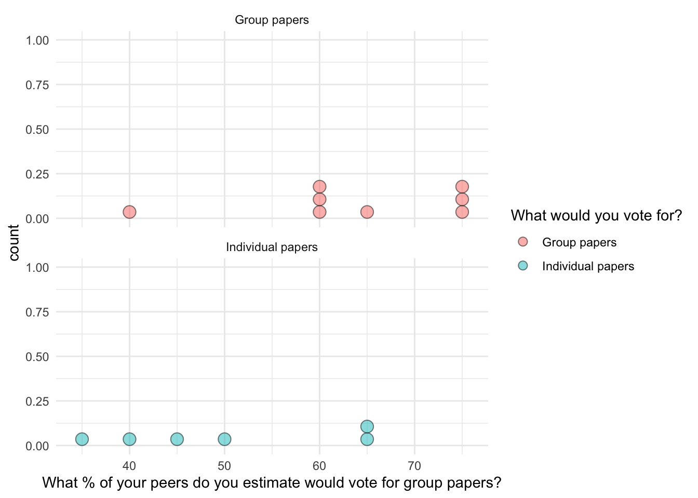

── Conflicts ────────────────────────────────────────── tidyverse_conflicts() ──
✖ dplyr::filter() masks stats::filter()
✖ dplyr::lag() masks stats::lag()
ℹ Use the conflicted package (<http://conflicted.r-lib.org/>) to force all conflicts to become errors
library(qualtRics) ## Install this package with: install.packages("qualtRics")## This package makes it easy to load Qualtrics data. You could use read_csv(), but it's more fiddly## Load the survey datadata_raw <- qualtRics::read_survey(here("data", "Ross survey_September 23, 2026_13.22.csv"))
# A tibble: 10 × 22
StartDate EndDate Status IPAddress Progress
<dttm> <dttm> <chr> <chr> <dbl>
1 2026-09-17 12:20:52 2026-09-17 12:21:05 Survey Preview <NA> 100
2 2026-09-17 14:38:09 2026-09-17 14:38:58 IP Address 130.58.173.32 100
3 2026-09-17 14:38:19 2026-09-17 14:39:13 IP Address 130.58.160.43 100
4 2026-09-17 14:38:00 2026-09-17 14:39:21 IP Address 130.58.101.83 100
5 2026-09-17 14:36:12 2026-09-17 14:39:24 IP Address 130.58.162.84 100
6 2026-09-17 14:38:43 2026-09-17 14:39:54 IP Address 130.58.162.73 100
7 2026-09-17 14:38:28 2026-09-17 14:40:03 IP Address 130.58.169.1… 100
8 2026-09-17 14:39:26 2026-09-17 14:40:21 IP Address 130.58.103.23 100
9 2026-09-17 14:39:03 2026-09-17 14:40:33 IP Address 130.58.96.53 100
10 2026-09-17 14:39:32 2026-09-17 14:42:06 IP Address 130.58.175.2… 100
# ℹ 17 more variables: `Duration (in seconds)` <dbl>, Finished <lgl>,
# RecordedDate <dttm>, ResponseId <chr>, RecipientLastName <lgl>,
# RecipientFirstName <lgl>, RecipientEmail <lgl>, ExternalReference <lgl>,
# LocationLatitude <dbl>, LocationLongitude <dbl>, DistributionChannel <chr>,
# UserLanguage <chr>, `Last Seen Flow Element ID` <chr>,
# `Last Seen Question IDs` <lgl>, Q4 <dbl>, Q8 <dbl>, Q5 <chr>
data_raw |>View()## Question 1. Which rows and columns do think will be important for our analyses?## (We want to ask: are participants' estimates of what other people would choose biased towards what participants would choose themselves?)## Question 2. Are there any rows that shouldn't be included?## Question 3. Each participant's estimate of the percentage of others who would choose group papers, and individual papers, should sum to 100. Are there any participants where this is not the case?## Discuss these questions with your group, and put your answers in your individual .qmd report. (Write your answers in the whitespace outside of code chunks)
## Clean the data### Remove the "preview" participantdata_clean <- data_raw |>filter(DistributionChannel !="preview")### Keep only the columns we are interested in: perception of others' choices (%), and participants' own choice (Individual papers, Group papers)### Keep "ResponseID" as an ID for each subject.### Q4: % voting for group; Q8: % voting for individual; Q5: own choicedata_clean <- data_clean |>select(ResponseId, Q4, Q8, Q5)## Give these variables more meaningful names (You don't have to use the same names as the example)data_clean <- data_clean |>rename(perception_group = Q4, perception_individual = Q8, own_choice = Q5)
## Estimate the mean and SD of the % estimates of the participants from each group (groups: (1) participants who would choose group papers; (2) participants who would choose individual papers.## Arbitrarily choose one of the two "%" columns to focus on -- they each contain the same information. ## In my example, I will choose to focus on the "perception_group" column: according to the participant, what percentage of other people would choose group papers?## (Instructions: Refer to the example from workshop 2, and to the documentation of the "group_by" function).## What are the means from each group? ## What is the difference between the means?## Is the difference between the means in the direction predicted by the false consensus effect?data_clean |>group_by(own_choice) |>summarize(mean_group =mean(perception_group),sd =sd(perception_group))
## What is the actual percentage of students in the class who would vote for group papers?data_clean |>group_by(own_choice) |>summarize(n =n(),mean_group =mean(perception_group),sd =sd(perception_group))
# A tibble: 2 × 4
own_choice n mean_group sd
<chr> <int> <dbl> <dbl>
1 Group papers 8 63.8 11.9
2 Individual papers 6 50 12.6
8/14
[1] 0.5714286
## Visualize the distribution of scores in each group## Because there are so few data points, let's visualize every participant as a dot with "geom_dotplot"data_clean |>ggplot(aes(x = perception_group, group = own_choice)) +geom_dotplot(aes(fill = own_choice), alpha = .5) +theme_minimal() +facet_wrap(~own_choice, nrow =2)
Bin width defaults to 1/30 of the range of the data. Pick better value with
`binwidth`.

Thursday Oct 1: Test whether the group difference is statistically significant
## Run a t test comparing the mean estimates from each group. Is the difference statistically significant?## Emmeans is a library that lets you run group comparisons (equivalent to t-tests), correlation tests, and also more complex analyses using "generalized linear models."## T-tests and correlation tests are both secretly special cases of linear models. ## I recommend using emmeans, and the linear model approach, because the syntax is simpler, and you can apply the same patterns when you run different analyses. Emmeans also makes it easy to find group means, and to find the size of differences and correlations.library(emmeans)
Welcome to emmeans.
Caution: You lose important information if you filter this package's results.
See '? untidy'
model <-lm(data = data_clean, perception_group ~ own_choice) # Make the linear model## Show estimated mean for each groupemmeans(model, ~ own_choice)
## Compare the means of each group (equivalent to a t test)emmeans(model, ~ own_choice) |>contrast("pairwise")
contrast estimate SE df t.ratio p.value
Group papers - Individual papers 13.8 6.59 12 2.086 0.0590
## "Estimate" tells you the difference between group means. "p value" tells you how likely you would be to observe a difference this large or greater (in either direction), if there were in fact no difference between groups (if the "statistical null hypothesis" were true). ##
## Optional: compare your results to the "t.test" function## You should get the same results using the "t.test" function, assuming equal variance ("student's t test"):data_individual <- data_clean |>filter(own_choice =="Individual papers")data_group <- data_clean |>filter(own_choice =="Group papers")x = data_individual$perception_groupy = data_group$perception_groupt.test(x, y, var.equal = T)
Two Sample t-test
data: x and y
t = -2.0861, df = 12, p-value = 0.05899
alternative hypothesis: true difference in means is not equal to 0
95 percent confidence interval:
-28.1113652 0.6113652
sample estimates:
mean of x mean of y
50.00 63.75
## This is fine, but I find t.test fiddly to work with
## Visualize the raw scores, means, and 95% confidence intervals around each group's mean## Instructions: Work with your group to figure out how to do this, based on documentation and examples you find online. Look at the documentation for stat_summary, and/or Google "how to plot 95% error bars with ggplot." If you are struggling, I can walk you through example code.## Optionally, add a vertical line indicating the real % of the class who would vote for group papers.library(Hmisc)
Attaching package: 'Hmisc'
The following objects are masked from 'package:dplyr':
src, summarize
The following objects are masked from 'package:base':
format.pval, units
data_clean |>ggplot(aes(x = perception_group, y = own_choice, color = own_choice, fill = own_choice)) +geom_vline(xintercept =57, linetype ="dashed" ) +# 1. Plot the 95% CI error barsstat_summary(fun.data = mean_cl_normal, geom ="errorbar", width =0.2, color ="gray20") +# 2. Plot the group means as pointsstat_summary(fun = mean, geom ="point", size =3, show.legend = F) +coord_cartesian(xlim =c(0, 100)) +theme_minimal()